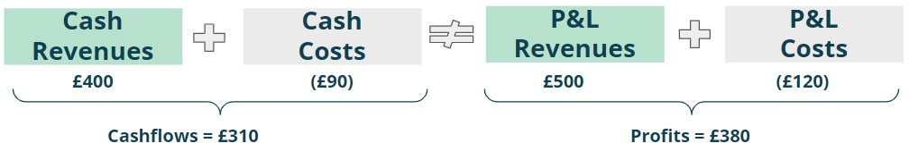
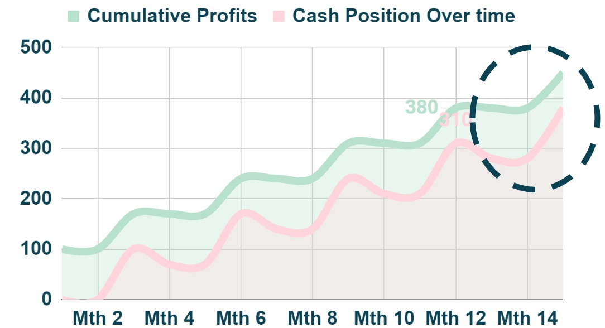
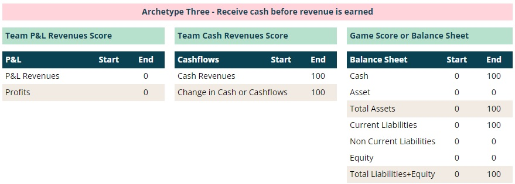
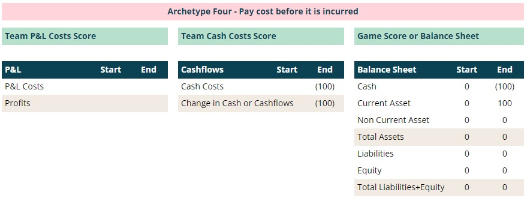
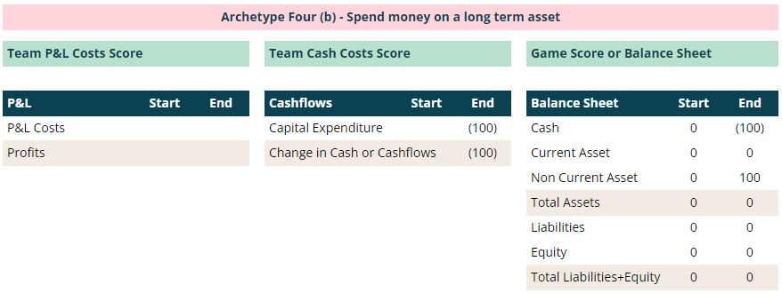
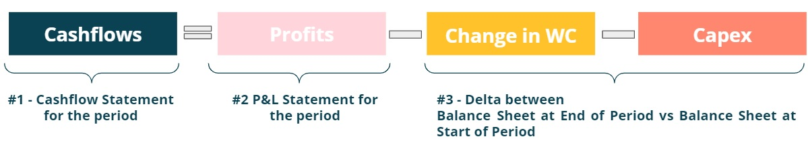

Summary
As runway is determined by Cashflows not Profit,
to get a full picture of the operations of a Company, it is of paramount
importance to understand how Profits translate into Cashflows over time.
If there is one thing to remember, is that Profits is different
from Cashflows and the relationship between both can be described by a
simple equation takes into account
the impact of time:
This note sets the foundations required to understand more advanced topics in the future.
Step 1
Cashflows = Profits + Time Impact
Cashflows and Profits are defined in the same way, i.e. revenues net of costs, but they are not measured on the same basis.
 Figure 1: Cashflows vs profits.
Figure 1: Cashflows vs profits.
Cash basis
This means to record
revenues and costs based on when they are respectively received (cash revenues) or paid (cash costs).
 Figure 2: Cash basis for cashflows.
Figure 2: Cash basis for cashflows.
Let's use an example to make it easier to understand. During a certain year, a Company has the following cash transactions:
- Cash revenues client 1 = £100 received in month 3
- Cash revenues client 2 = £100 received in month 6
- Cash revenues client 3 = £100 received in month 9
- Cash revenues client 4 = £100 received in month 12
- Cash revenues client 5 = £100 received in month 15
- Costs Costs = (£30) paid in month 4; (£30) paid in month 7;(£30) paid in month 10 and (£30) paid in month 13
The Cashflows for the year would thus be £310 = £400 cash revenues minus £90 cash costs. Any revenue (cost) received (paid) post month 12 does not count towards the yearly figure. In this example, the £100 cash revenues from client 5 in month 15 and the (£30) cash costs in month 13 would be excluded.
Profit and Loss (P&L) basis
There are rules,
based on different accounting standards, that stipulate when revenue is earned
and when costs are incurred.
 Figure 3: P&L basis for profit.
Figure 3: P&L basis for profit.
Cashflows can be derived from Profits if one takes into account the time impact of (i) receiving revenues vs earning them and (ii) paying costs vs incurring them, i.e. Cashflows = Profits + time impact.
Going back to the previous example
- P&L Revenue client 1 = £100 earned in month 1 (received in month 3)
- P&L Revenue client 2 = £100 earned in month 3 (received in month 6)
- P&L Revenue client 3 = £100 earned in month 6 (received in month 9)
- P&L Revenue client 4 = £100 earned in month 9 (received in month 12)
- P&L Revenue client 5 = £100 earned in month 12 (received in month 15)
- Quarterly P&L Costs = (£30) incurred per quarter, paid after quarter end
The profit for the year would thus be £380 = £500 P&L revenues minus £120 P&L costs.
 Figure 4: Cashflow basis vs P&L basis.Let's keep going through the previous example:
- From a revenue perspective, the company received £400 cash revenues (client 5 was paid after year end)
and earned £500 of revenues from 5 clients.
The time impact was thus (£100) relating to the £100 from client 5 that was earned in month 12 but was only received in month 15. - From a cost perspective, it paid out three quarters (£90) but incurred
(£120) relating to four quarters.
The time impact was thus £30 relating to fourth quarter costs incurred during the quarter that were paid in month 13.
The overall time impact was thus (£70k)=(£100)+£30.
 Figure 5: Cash Time impact (£70) =£310-£380 = (£100) from revenues +£30 from costs
Figure 5: Cash Time impact (£70) =£310-£380 = (£100) from revenues +£30 from costs
Step 2
Balance Sheet = Keep a Score Sheet
In the prior sections, we have discussed two simplified versions of the financial statements of a Company for a certain time period:
- Cashflows = net change in cash position for the period
- P&L = profit or loss for period
To tie everything together we need to introduce a third financial statement, called the Balance Sheet.
Let’s connect sports and accounting (ugh how is that possible?). Pick any sport you like that has two teams and think about the beginning of the match: nothing has happened and therefore there is no score. Over time each team will score points and the Score Sheet is updated accordingly. At the end of the match there will be a final Score Sheet, which includes the sum of all the points scored for each team. A Balance Sheet works the same, and at any moment in time it provides a snapshot of the running score between two teams (albeit the score, or balance, is shown in a slightly different way). There are four fundamental archetypes that can be used to cover the vast majority of transactions in a Company.
Archetype #1 > Revenues
Going back to the original example in this note, what would the final Score Sheet
look like for each revenue "team" at the end of the year (month 12)?
TEAM P&L REVENUES thus wins the game by a margin of £100. In accounting terms however, the overall game score or Balance Sheet is shown in a slightly different way (after all this is accounting stuff…):
The Score Sheet (i.e. Balance Sheet) for the game is shown as:
- Assets - cash or assets that will convert into cash at the bank in the future
- Liabilities - amounts that will have to be paid from cash at the bank in the future
- Equity - balancing item to make sure that the equation below balances
Equity can thus be interpreted as the residual claim that Shareholders will have on a Company's Assets net of its Liabilities. Whatever is left would be owed to them, to compensate for the risk taken when they invested in the Company. Equity may be a negative figure, when losses incurred over time are greater than the initial Equity investment from Shareholders - in this situation the Company is insolvent which is a red flag. When this happens it is very likely that within 12 months the Company becomes iliquid and runs out of cash to pay the Bills. To put it in another way, Runway is equivalent to when the Company will become iliquid. The Balance Sheet can thus be analysed in order to determine the financial strength of a Company.
Coming back to the example at the start of this note, for Archetype #1 (Revenues), the Score Sheet for the game (i.e. the Balance Sheet) would be rewritten as (see all financial statements further below):
Archetype #2 > Costs Let's repeat the exercise for TEAM CASH COSTS vs TEAM P&L COSTS:
In accounting terms, the score would be written slightly different as:
The balancing item of £30 will have to be paid from cash at the bank in the future. As previously explained, this is a liability of £30. For Archetype #2 (Costs), the Score Sheet for the game (i.e. the Balance Sheet) would be rewritten as:
 Figure 7: Three financial statements for Archetype #2 (Costs).
Figure 7: Three financial statements for Archetype #2 (Costs).
What is the Overall Score ? GAME 1 SCORE (REVENUES)
+ GAME 2 SCORE (COSTS)
The examples above, describe two fundamental archetypes
that are used as building blocks to produce the financial
statements of a Company.
Let's put this to use in the original example by simply adding up the two archetypes.
 Figure 8: Three financial statements built using Archetypes 1 and 2.
Figure 8: Three financial statements built using Archetypes 1 and 2.
As mentioned earlier in this note, from a P&L and Cashflows perspective
we get respectively to £380 and £310. The time impact of -£70
(-£100+£30) is simply the consequence of:
Step 3
Cashflows = Profits - Change in Working Capital
You may have heard in the past the term “Working Capital” and searched online the term to get the below:
The capital of a business which is used in its day-to-day trading operations, calculated as the current assets minus the current liabilities
Clear as mud right?
The following figure is replicating the balance sheet from the previous section, with two small changes:
- Assets were split into two lines: (i) current assets (CA) which are assets that are expected to be converted into cash, within 12 months after the end of the period and (ii) non current assets which are assets that will take more than 12 months to be converted to cash
- Liabilities were split into two lines: (i) current liabilities (CL) which means amounts owed that are expected to be paid within 12 months after the end of the period and (ii) non current liabilities which means amounts owed that will take more than 12 months to be paid
At the start the period CA = 0 and CL = 0 hence Working Capital
whic is defined as the difference between CA and CL was zero. However at the end of the period, CA increased to £100 and
CL increased to £30 hence Working Capital increased from £0 to £70.
Does this number look familiar?
Hopefully yes… this figure is the time impact for the period,
£70 = £100 time impact
from revenues net of £30 time impact from costs. Therefore, one concludes the following relationship
between the three financial statements:
 Figure 10: Cashflows (£310) = Profits (£380) - Change in WC (£70).
Figure 10: Cashflows (£310) = Profits (£380) - Change in WC (£70).
Why is Current Assets minus Current Liablities called Working Capital?
The figure below is plotting the cumulative Profits and Cashflows on a monthly basis between
month 1 and month 15.
 Figure 11: Delta between Profits and Cashflows = Working Capital .
If revenues were received as soon as they were earned and costs were paid as soon as they were
incurred, the pink line for the cash position over time would exactly match the green line for the cumulative Profits.
Figure 11: Delta between Profits and Cashflows = Working Capital .
If revenues were received as soon as they were earned and costs were paid as soon as they were
incurred, the pink line for the cash position over time would exactly match the green line for the cumulative Profits.
There is typically a delay between (i) earning and receiving revenues (Current Asset) and
(ii) incurring and paying for costs (Current Liability), and as a consequence the cash position
ends up being lower.
The delta between the two lines represents cash tied up in the Company's operations that cannot be used to pay
the bills.
Replace the words "cash" by "Capital" and "operations" by "Working" and reverse the order and you get to what
is called Working Capital = Current Assets - Current Liabilities.
Notice that in month 15 the delta between both lines collapses to zero because there
are no more revenues or costs to be received or paid.
This implies that the Company would cease operations; in practice what would happen is
that it would continue to generate revenues and incurs costs (with delays to receive and pay)
and there would be an ongoing Working Capital level since the lines would never cross.

Figure 12: Ongoing Working Capital.
Final Step
Cashflows = Profits - Change in Working Capital - Capital Expenditures
There are two remaining archetypes:
i) Cash revenues are received before they were actually earned (think SaaS
business where a subscription is paid one year upfront) or
ii) Cash cost is
paid before it was actually incurred (think that you are the client to
the SaaS business).
In both cases, there is no P&L impact since there is
no revenue earned or cost incurred.
Archetype #3 > Receive cash revenues before earning revenues
Cashflows increases by e.g £100. In the Balance Sheet, cash
goes up by the same amount and current liabilities (since it relates to one year)
increase by £100,
given that the Company has not provided yet the product or service relating
to the cash revenues.

Figure 13: Three financial statements for Archetype #3 (Receive cash
before earned).
Archetype #4 > Pay cash cost before incurring it
Cashflows decreased by e.g £100.
In the Balance Sheet cash decreases by the same amount and current assets (since it relates to one year)
increase by £100, given
that the Company has paid for a product or service that was not provided yet.

Figure 14: Three financial statements for Archetype #4 (Pay
before cost is incurred).
Archetype #4b > Purchase a long term asset
There is a slightly different version of the prior archetype.
This relates to when cash is spend to purchase an asset that will be used for
several years to generate additional cashflows.
In this situation, the cash cost is
called "Capital Expenditure" or "Capex". If we use the same example, cashflows decreased by e.g £100.
In the Balance Sheet cash decreases by the same amount and non-current assets (since it relates to more than one)
increase by £100.

Figure 15: Three financial statements for Archetype #4b (Capex expenditure).
Given that the cash spent on the new asset, shows up in the balance as a non-current asset, the equation that relates
Cashflows to Profits needs to be updated to include "Capex", as this is not picked up by the change in Working
Capital.

Figure 16: Cashflows = Profits - Change in WC - Capex.
Conclusion
There were a considerable amount to topics covered here to build intuition and
the foundations required for advanced topics.
If there is one thing to remember, is that Profits is different
from Cashflows and the relationship between both can be described by a
simple equation that takes into account
the impact of time:
Why go through the hassle of explaining all this?
These concepts set the foundations required to understand
a future note, which will cover different types of business models and how important it is to be able to
connect Profits to Cashflows, in order to determine how easy (or not) it is to scale a Company from a Cashflow
perspective.
If I can be helpful on anything, or if you have any comments or suggestions,
please do reach out: